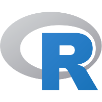

IA + workflow
En desarrollo
Asistente con WhatsApp
Prototipo para conectar mensajería, procesamiento con IA y flujos automatizados mediante servicios desacoplados.
backend · datos · automatización
Soy estudiante de Ingeniería en Tecnologías de la Información, con foco en automatización, análisis de datos, integraciones y desarrollo backend.
// 01. sobre_mí
Me interesa crear herramientas que resuelvan problemas concretos: automatizar tareas repetitivas, limpiar y transformar datos, conectar servicios y construir piezas backend mantenibles.
Este portafolio reúne proyectos en distintas etapas. En cada caso indico su estado, el problema abordado, la solución técnica y los próximos pasos para mostrar el proceso con transparencia.
// 02. proyectos_destacados
Selecciona una tarjeta para conocer el problema, la solución, las tecnologías y el estado real del proyecto.
Prototipo para conectar mensajería, procesamiento con IA y flujos automatizados mediante servicios desacoplados.
Aplicación Java para observar carpetas, detectar eventos y ejecutar reglas configurables sobre archivos.
Análisis de índices bursátiles para explorar y comparar patrones temporales mediante visualizaciones interactivas.
// 03. intereses
Áreas que conectan mi aprendizaje técnico con problemas que me interesa resolver.
Diseño de servicios claros, reglas de negocio mantenibles e integraciones mediante APIs.
Flujos que reduzcan trabajo repetitivo y utilicen IA como una herramienta dentro de procesos controlados.
Transformar datos dispersos en análisis comprensibles, indicadores útiles y mejores decisiones.
Proyectos de equipo, documentación técnica y transferencia de conocimiento mediante ejemplos prácticos.
// 04. laboratorio
Ejercicios, colaboraciones y exploraciones disponibles en mi perfil de GitHub.
// 05. stack_tecnológico
Una base práctica para backend, datos, automatización y despliegue.

R// 06. contacto
Si tienes una idea, un proyecto o una oportunidad de aprendizaje, conversemos.